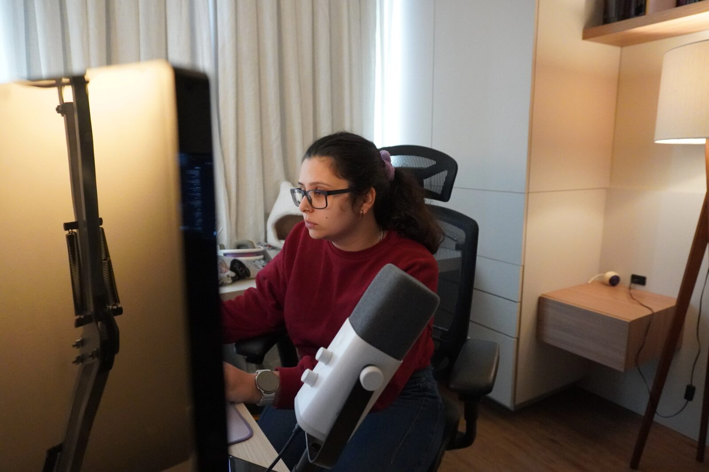

Thoughts on first months as CEO
First leaflet post, trying to expand my writing from just linkedin posts :)
I realize I like linkedin-sized posts while writing blogs is too overwhelming. I've been mostly posting on linkedin lately and I don't like that all my writing is locked up there, so I'll try to migrate some of it here

I'm five months into the CEO role. I wrote down some reflections:
The days seem to have 4 hours in total. Time flies!! It has never been so important that I'm disciplined with my focus. I play many roles, and sometimes marketing needs more attention than dev, or management stuff has been neglected, because I was worried about the technical details of something or how we would explain some concept in the comms. I can easily be the bottleneck not only of my agents, but of the team, the marketing plan, and, realistically, the whole company.
So my brain is full. Which I think is causing my subconscious to play a much larger role than usual. My intuition on things is shining. I make a choice based on intuition only to read a few days later a quote on a book that confirms I made the correct call (or at least the one recommended by the author). I realize the rationale was there with me, just buried under the surface, and every time this happens, I feel a tiny bit more confident.
I've never been so excited thinking about what the future of Quint could be as I am right now. Everyday, I think about the vision and it makes my heart race. And I think about who are users are going to be, what pains they have, and that makes me want to launch something tomorrow! But then I think about all the things we could do, and we'll likely never do all of them. Which makes me reflect:
The hardest part of these last few months was to choose what we'd do first.
I want the product we are working on (Quint Studio!) to empower people right now, as we navigate all these changes to our roles, day-to-day, and overall structure that AI has brought in. I fear we could be losing the fun parts of programming and I really think we can rescue it without slowing down. More automation should always mean more opportunity to exercise our precious human judgment.
My months have been all about time discipline, intuition, and lots of hard choices. I'm learning what to learn.
I'm tired and happy, and mostly so excited about what we are going to be sharing next.